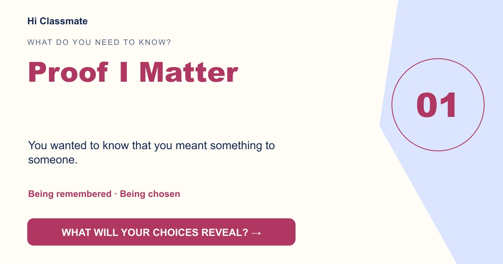

Proof I Matter
You wanted to know that you meant something to someone.

Your choices leaned toward feelings that were never said out loud. A small sign that you were wanted, remembered or chosen may carry more weight than a dramatic secret.
Unlock the phone →